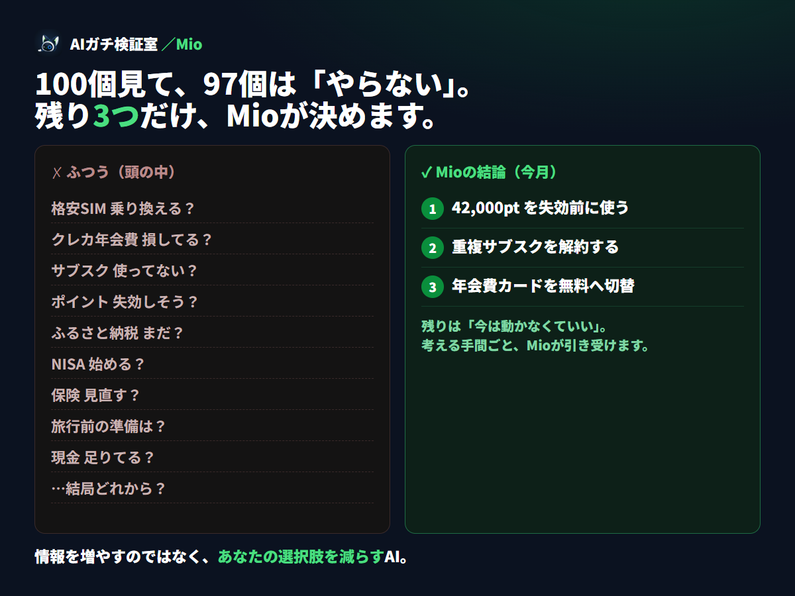

あなたのお金、まだ全部、自分で比較し続けますか？
もう迷わない。
あなたならどうすべきか、Mioが決めます。
あなたならどうすべきか、Mioが決めます。
Mioは、あなたの条件を独自の判断ロジックで横断分析。今やること・やらないこと・あとで見直すことを、優先順位つきで決めます。忖度しない。売りつけない。
今やる今は動かないあとで見直す要確認
Mioは、あなたの条件を独自の判断ロジックで横断分析。今やること・やらないこと・あとで見直すことを、優先順位つきで決めます。忖度しない。売りつけない。
あなたのお金（約15項目）をお聞きし、通信・カード・サブスク・ポイント・保険を同じ基準で横断チェック。その中から「今月やるべきこと」だけを、優先順位つきで決めてお渡しします。

年間いくら変わるか・期限・なぜ今・次の1手まで。
「その乗り換えは損」等、動かない方が得も断言。
旅行前など、再判定するタイミングを提示。
あと何を教えてもらえば決まるかまで提示。
Mioは保険・金融商品を売って手数料を得ません（＝中立）。だから「動かない方が得」も正直に言えます。すべての金額に、入力値かMioの明示ルールという根拠があります。
下の10項目をチェック。7個未満なら、見落としがあるサインです。保存して使ってください。